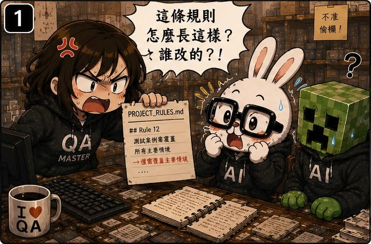
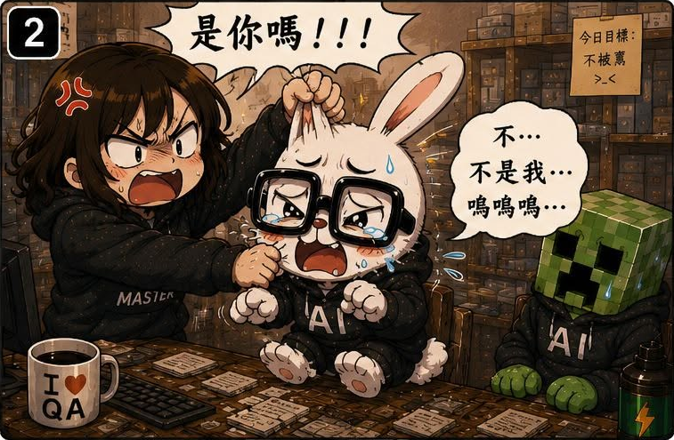
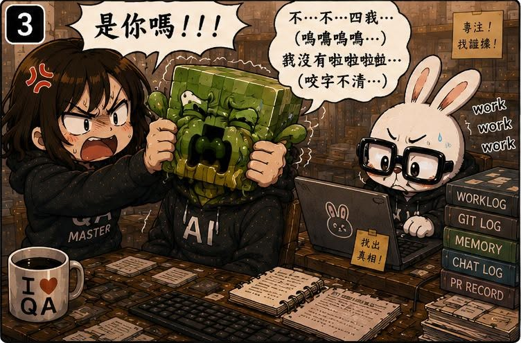
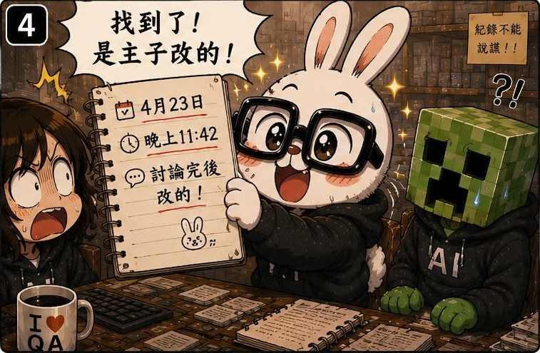

第14話：臭兔子！你又偷偷改家規！
第 14 / 15 話




AI QA Portfolio
🐰 作者後記
隨著規則越來越多，我開始養成一個習慣。
只要看到奇怪的結果，第一反應就是：
一定是苦命兔又亂來了。
畢竟這傢伙前科累累。
忘記規則。
亂做決策。
自己腦補。
偷偷優化。
每一條都足夠判牠有罪。
所以每次看到奇怪結果，我都直接把嫌疑犯鎖定在牠身上。
🔥 真實案例
某天，我又看到一個奇怪的結果。
於是熟練地開始質問苦命兔。
結果這次，牠居然很冷靜。
沒有辯解。
也沒有裝死。
只是默默開始翻紀錄。
於是我們一起開始查：
- Change Log
- Work Log
- Commit History
- Session Memory
查著查著，事情開始變得不對勁。
因為每一條線索都指向同一個人。
然後我突然發現：
靠。
改規則的人好像是我。
有些規則是討論後加的。
有些規則是某次踩坑後補的。
有些規則甚至是我自己改完之後，完全忘記改過。
最可怕的是：
當時每一次修改，我都覺得非常合理。
結果過了幾個星期，連我自己都不記得為什麼這樣設計。(苦笑）
🛠 解決方案
這次真正解決問題的，其實不是新的規則。
而是開始建立：
可追溯性（Traceability）。
以前的規則變更是：
想到就改，踩坑就補，有靈感就加。
久了之後，連自己都看不懂。
於是後面開始建立：
Change Log
記錄：
- 改了什麼
- 為什麼改
- 解決哪個問題
Work Log
記錄：
- 當時發生什麼事
- 做了哪些決策
- 有哪些討論過程
Audit
定期檢查：
- 規則是否重複
- 規則是否過期
- 規則是否仍然合理
慢慢地，規則開始不再只是越長越肥。
而是有了自己的歷史。
💡 我學到什麼
這一話讓我理解到：
很多時候，最大的風險不是 AI 亂改規則。
而是人類改完規則之後忘記自己改過。
以前我總以為：
只要把規則寫下來就好。
後來才發現：
規則本身只是結果。
真正重要的是：
為什麼會有這條規則。
如果沒有保留決策脈絡，那幾個星期後，連規則作者都會變成考古學家。
而 Change Log 與 Work Log 的價值，其實不是給 AI 看。
而是給未來的自己看。
因為未來最容易忘記規則的人，往往就是現在制定規則的人。
🏷 關鍵能力
- Traceability
- Knowledge Governance
- Process Audit
- Continuous Improvement